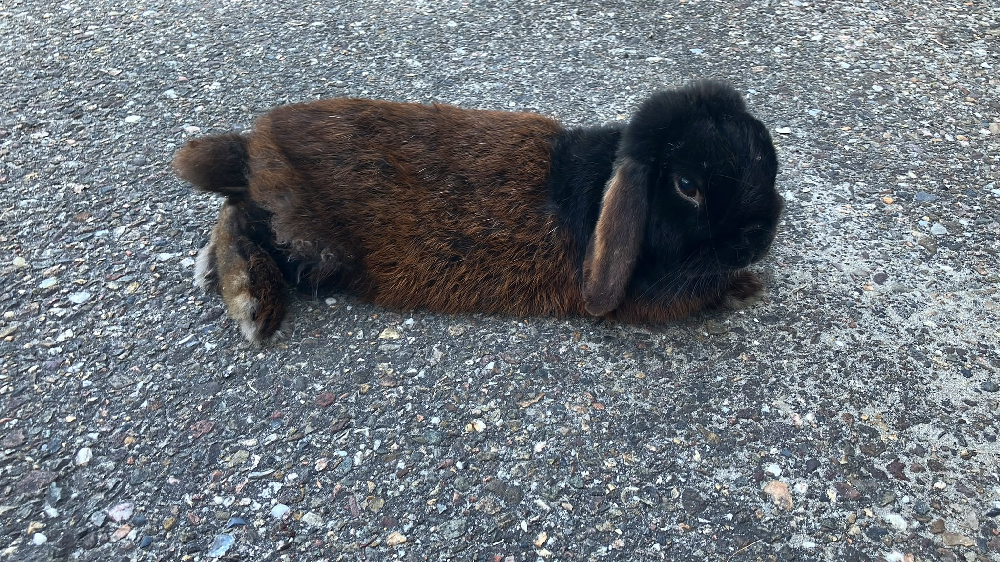
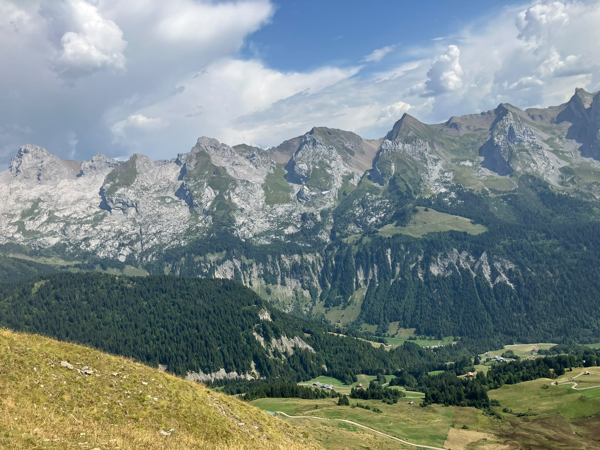

Wie ben ik?
Ik ben Vinn Duyvesteijn. Ik ben momenteel 16 jaar oud en ben jarig op 14 juni. Ik hou van gamen, eten en mn konijn.
Ook hou ik ervan om op vakantie te gaan. Elk jaar ga ik ook naar Frankrijk toe. Meestal is dat in de bergen.
De scholen waar ik naartoe ben gegaan zijn:
- Basischool: Achtsprong
- Middelbare school: Stanislas College Westplantsoen en Stanislas College Dalton
- MBO: Techniek College Rotterdam


Wat kan ik?
De codeertalen die ik ken/aan het leren ben zijn: HTML en CSS. Ik begon te leren hiermee in 2026.
Wat wil ik leren?
Ik zou graag nog meerdere codeertalen willen leren. Als volgende ga ik JAVA leren. Ook zou ik graag een keer blender willen leren.